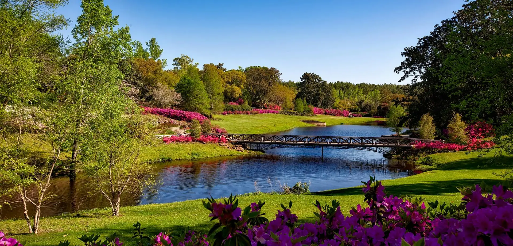
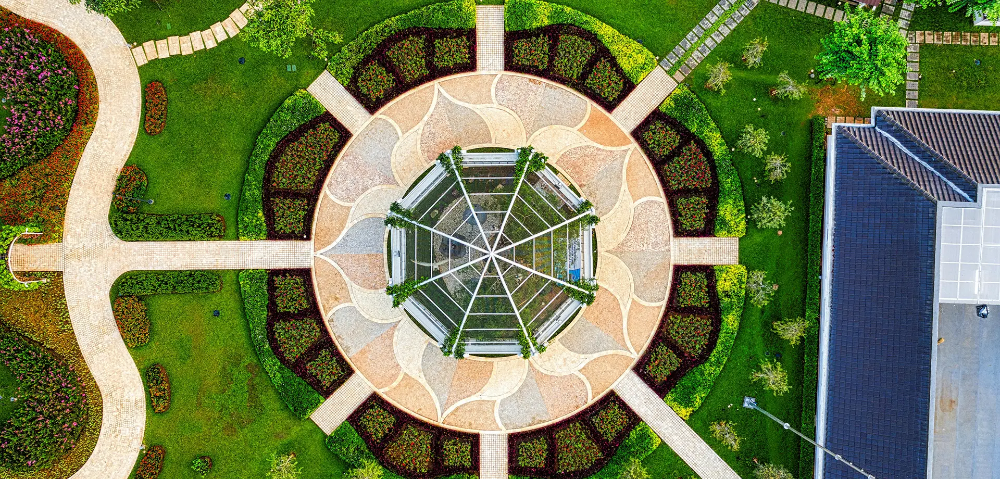

¿Qué necesitas?

¿Qué necesitas?

Análisis y diagnósticos de enfermedades, deficiencias, estados vegetativos y las posibles causas.
Trabajo de investigación sobre posibles soluciones o manejos ante una problemática.
Enseñanza y consejos sobre productos orgánicos y manejos saludables.
Se realizan trabajos tanto de diseño, tomando como práctica análisis profundos del lugar, como también la ejecución de los proyectos diseñados únicamente por la empresa. Diseño integrado de parques, plazas, jardines, techos verdes, jardines verticales, interiores, entre otros.
Poda de formación, arte topiario, formación de setos, poda de frutales y de ramas problemáticas.
Trabajos de riego, transplantes, limpieza, reorganización, desmalezado y monitoreo.
Abonado con materia orgánica, bioestimulantes y controles orgánicos.